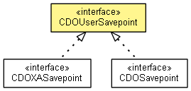

org.eclipse.emf.cdo.transaction
Interface CDOUserSavepoint
- All Known Subinterfaces:
- CDOSavepoint, CDOXASavepoint, InternalCDOSavepoint, InternalCDOUserSavepoint, InternalCDOXASavepoint
- public interface CDOUserSavepoint

Creates a save point in a CDOUserTransaction that can be used to roll back a part of the transaction.
Note: Save points do not flush to disk. Everything is done in memory on the client side.
- Since:
- 3.0
- No Implement
- This interface is not intended to be implemented by clients.
- No Extend
- This interface is not intended to be extended by clients.
getTransaction
CDOUserTransaction getTransaction()
getNextSavepoint
CDOUserSavepoint getNextSavepoint()
getPreviousSavepoint
CDOUserSavepoint getPreviousSavepoint()
getNumber
int getNumber()
- Since:
- 4.1
isValid
boolean isValid()
rollback
void rollback()
Copyright (c) 2011, 2012 Eike Stepper (Berlin, Germany) and others.